<ion-content>
  <ion-slides [options]="slideOpts">
    <ion-slide>
      <div class="homepage__content">
        <div class="homepage__content--logo">
          
        </div>
        <div class="homepage__content__container">
          <div class="homepage__content__container--buttons">
            <ion-button
              (click)="goToVoiceAssist()"
              class="homepage__content__container--buttons--btn-voz big-btn"
            >
              <div
                class="homepage__content__container--buttons--btn-voz--container"
              >
                <div class="btn-icon">
                  <ion-icon name="mic"></ion-icon>
                </div>
                <ion-item-divider></ion-item-divider>
                <div>
                  Assistente por voz
                </div>
              </div>
            </ion-button>

            <ion-button
              class="homepage__content__container--buttons--btn-sos big-btn"
            >
              <div
                class="homepage__content__container--buttons--btn-sos--container"
              >
                <div class="btn-icon">
                  <ion-icon name="warning-sharp"></ion-icon>
                </div>
                <ion-item-divider></ion-item-divider>
                <div>
                  Chamar Emergência
                </div>
              </div>
            </ion-button>
          </div>
          <div class="homepage__content__container--footer">
            <div>
              <div class="homepage__content__container--footer--seemore">
                ARRASTE PARA VER MAIS
              </div>
              <div class="homepage__content__container--footer--line"></div>
            </div>
          </div>
        </div>
      </div>
    </ion-slide>
    <ion-slide>
      <app-dash></app-dash>
    </ion-slide>
  </ion-slides>
</ion-content>
